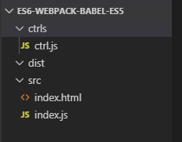
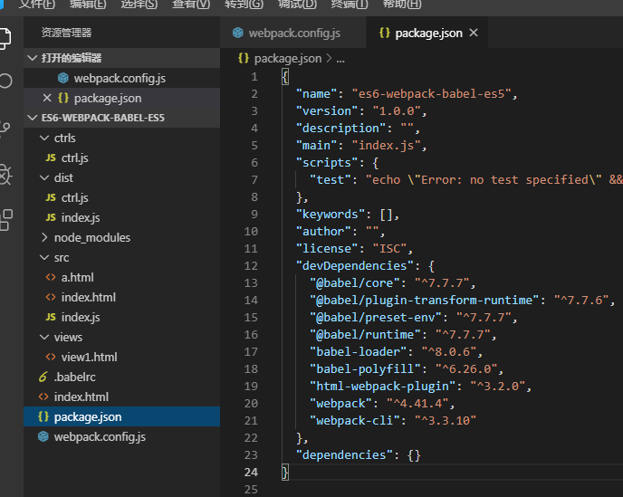

接续上篇ES6+转ES5，本篇将使用webpack和babel将多个不同目录下指定的多个ES6+语法的js文件编译为ES5，并将编译后的文件配置注入对应的html文件。
所需环境node、npm、设置淘宝镜像请参考上篇进行安装，地址：https://www.cnblogs.com/puyongsong/p/12036090.html

cnpm init -y
执行成功后会生成文件：package.json
cnpm install webpack --save-dev
（有个坑）在webpack3中，webpack本身和它的CLI以前都是在同一个包中，但在第4版中，两者已分开管理，所以要单独安装其脚手架。
执行命令安装webpack-cli
cnpm install webpack-cli --save-dev
cnpm install --save-dev babel-loader @babel/core @babel/preset-env
babel-loader：对使用了ES2015+语法的.js文件进行处理。
babel-core：提供一系列api。当webpack使用babel-loader处理文件时，babel-loader就调用了babel-core的api。
babel-preset-env：告诉babel使用哪种转码规则进行文件处理。babel有几种规则都可以实现对ES6语法的转码，如babel-preset-es2015、babel-preset-latest、babel-preset-env，不过官方现已建议采用babel-preset-env。
cnpm install babel-polyfill --save-dev
cnpm install @babel/runtime --save-dev
cnpm install @babel/plugin-transform-runtime --save-dev
垫片：Babel默认只转换新的JavaScript句法（syntax），而不转换新的API，比如Iterator、Generator、Set、Maps、Proxy、Reflect、Symbol、Promise等全局对象，以及一些定义在全局对象上的方法（比如Object.assign）都不会转码。举例来说，ES6在Array对象上新增了Array.from方法。Babel就不会转码这个方法。如果想让这个方法运行，必须使用babel-polyfill，为当前环境提供一个垫片。
这个js配置文件的注意事项我都写上了注释，后面我会将其全部内容贴上来。
{
"presets": [
["@babel/preset-env", {
"targets": {
"browsers": ["> 1%", "last 2 versions"]
}
}]
],
"plugins": ["@babel/transform-runtime"]
} 意思是打包后的代码要支持1%以上的浏览器并支持浏览器的上2个版本
此时执行命令webpack就可以了
执行命令安装html-webpack-plugin插件
cnpm install html-webpack-plugin --save-dev
安装完成后执行webpack即可
注意：如果webpack打包时报错Cannot find module 'webpack/lib/node/NodeTemplatePlugin'
解决办法
执行命令cnpm link webpack --save-dev
然后在执行webpack就可以了
附上最后生成文件后的目录结构图：

附上webpack.config.js全部内容
//为了使用插件，需要将require()其添加到plugins阵列中。使用new运算符调用插件来创建插件的实例。
const HtmlWebpackPlugin = require('html-webpack-plugin');
const webpack = require('webpack'); // 用于访问内置插件
const path = require('path');
module.exports = {
entry: { //入口配置
index: './src/index.js',
ctrl: './ctrls/ctrl.js'
},
// 这里[]里的name就是app和search也就是entry里的key值
// 这里[hash:5]会随机生成一个版本号作为你的打包js版本
// 建议最后一次打包才加上.[hash:5] 否则每次打包都同一个文件都会生成新的版本号不同的文件
output: { //出口配置
// filename: '[name].[hash:5].js',
filename: '[name].js',
path: __dirname + '/dist' // 生成新文件的地址
},
module: {
rules: [{
test: /(\.jsx|\.js)$/, // 处理以.jsx或.js结尾的文件
use: {
loader: "babel-loader", // 用babel-loader处理
options: {
"presets": [
["@babel/preset-env", {
"targets": {
"browsers": ["> 1%", "last 2 versions"]
}
}]
]
}
}
}]
},
//html-webpack-plugin生成器通过自动注入所有生成的包为应用程序生成HTML文件
plugins: [
new HtmlWebpackPlugin({ // 地址为output对应的path地址dist
template: './src/index.html', //处理模板
filename: '../index.html' //生成模板
// 无chunks参数默认全部注入
}), new HtmlWebpackPlugin({
template: './src/a.html', //处理模板
filename: '../views/view1.html', //生成模板
chunks: ['index'] // 只引入index.js
})
]
}
共勉，望鞭策！